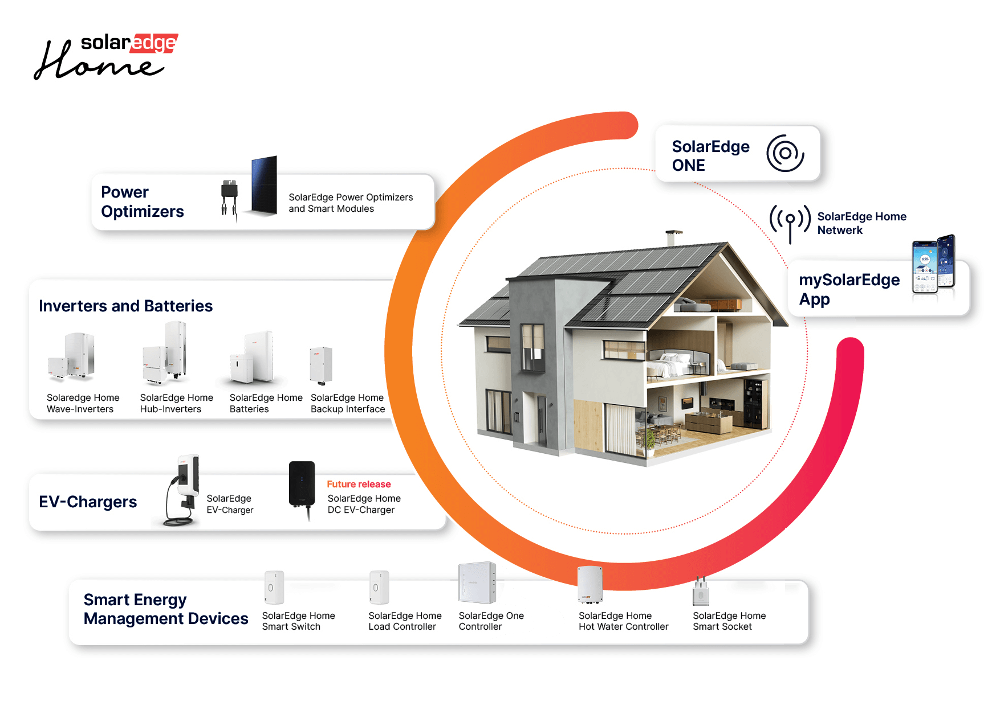

Embedded Linux Software Engineer with 3 years of experience at SolarEdge Technologies, developing software for the residential Smart Home Solution — an integrated platform for energy management, storage, EV charging, and smart home devices.
SolarEdge is a global smart energy company developing solar inverters, battery systems, EV chargers, and home energy management solutions. I worked on the residential Smart Home Solution, an embedded Linux platform that connects and coordinates solar production, battery storage, EV charging, and smart devices to optimize household energy usage.
The Smart Home Solution serves as the central controller of a connected home energy ecosystem. It communicates with inverters, batteries, EV chargers, and smart devices over protocols including MQTT, Modbus, Zigbee, and RS-485, making real-time decisions about energy distribution and consumption.

As part of the core R&D team, I worked across software development, hardware integration, algorithm design, testing, and system validation for a large-scale embedded Linux product.
Developed energy management logic that optimizes energy flow between solar production, battery storage, household loads, and the electrical grid.
Designed software infrastructure for integrating new hardware devices and communication protocols into a unified platform.
Developed and maintained embedded Linux services with a focus on reliability, performance, and scalability.
Built and operated hardware test environments using real inverters, batteries, meters, and smart devices for validation and debugging.
Collaborated closely with software, hardware, QA, and product teams throughout the development lifecycle.
Implemented automated unit tests using CMocka to improve reliability and support continuous development.
Working at SolarEdge gave me deep, production-grade experience in areas that are hard to learn outside a real embedded systems environment: